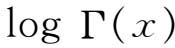

1．引言
从19世纪后期起，像发散级数这样一个课题的认真研究表明，数学家如何从根本上重新考虑他们自己关于数学本性的观念。在19世纪前期，他们接受了对发散级数的禁令，理由是，数学受某些内在要求或自然支配所限制，囿于一类固定的正确概念之内；但到这世纪之末他们却认识到，他们有自由接纳已显示出有用的任何思想。
我们可以回想一下，在整个18世纪，发散级数在或多或少意识到它们的发散性之下一直被使用着；因为只用很少几项它们确实给出函数的有用逼近。在柯西建立严密数学之后，多数数学家遵循他的意见，把发散级数作为不可靠的东西而摒弃。然而，有少数数学家（第40章第7节）继续维护发散级数，因为不论是函数的计算，还是作为导出它们的那些函数的分析等价物，它们都由于很有用处而给人以极深的印象。还有其他一些人维护发散级数，是因为发散级数是发现新事物的一种工具。例如德摩根(1)说：“我们必须承认，很多级数我们现在不能可靠地使用，除非作为发现的一种工具，它们的结果是要随后加以验证的；而最坚决地摒弃所有发散级数的人，无疑是把它们的这种用处放在他的私室里的……”
天文学家甚至在发散级数被排斥之后仍旧继续使用它们，因为由于计算目的，他们的科学迫切需要它们。由于这种级数开始很少几项就给出有用的数值逼近，所以天文学家就不顾这些级数从整体看是发散的这一事实；然而数学家关心的却不是前10项或20项的性态，而是整个级数的特征，所以不能把这种级数的事情建筑在实用这一唯一的根据上。
然而，正如我们曾经指出过的（第40章第7节），阿贝尔和柯西两人并非不关切他们在排斥发散级数时丢掉了某些有用的东西。柯西不仅继续使用它们（看下面），还写了题为《论发散级数的合理运用》（Sur l'emploi légitime des séries divergentes）的文章(2)，其中谈到

或log m！的斯特林级数（第20章第4节），他指出，这级数虽然对所有的x值发散，但当x是很大的正数时，可以用来计算logΓ（x）。事实上他证明了若固定所取的项数n，则求和过程停在第n项时所产生的绝对误差小于下一项的绝对值，而且当x增大时误差变小。柯西试图弄明白为什么这级数所提供的逼近会这样好，但他失败了。发散级数的用途终于使数学家们确信，一定有某种特性存在，只要加以提炼，就会显示出为什么它们会提供良好的逼近。这正如亥维赛在《电磁理论》（Electro-magnetic Theory）第2卷（1899）中所表述的：“对广义微分和发散级数这个题目，我必须说几句话……在被严密主义者的湿毛毯人为地冷却下来之后，要激起任何热情是不容易的……一定会出现发散级数的理论，或者说比现在范围要大的函数论，它把收敛级数与发散级数包括在同一个谐和的整体里。”亥维赛在作这个评论的时候，他不知道某些步骤已经开始了。
数学家们推进发散级数这门学科的意愿，无疑由于已经逐渐渗入到数学领域的其他影响而得到加强，这就是非欧几里得几何和新代数。数学家们缓慢地开始意识到数学是人为的，柯西的收敛定义不再被认为是某种神力所施的一种高度的必然。他们在19世纪末叶，在对那些给函数提供有用逼近的各种发散级数的本质进行提炼的过程中取得了成功。庞加莱称这些级数为渐近级数，虽然在这一世纪它们被称为半收敛级数，这后一术语是勒让德在他的《数论论文》（Essai de la théorie des nombers，1798，p．13）中引入的，它也被用来称呼振荡级数。
发散级数理论有两个主题。第一个是已经作过简短介绍的，就是某些这种级数，在取固定项数时，能逼近一个函数，变量愈大，逼近得愈好。事实上，勒让德在他的《椭圆函数论》（Traité des fonctions elliptiques，1825—1828）中已经用下述性质表征过这种级数：中止于任何一项所产生的误差，都与省去的第一项同阶。发散级数论的第二个主题是可和性概念。有可能用一种全新的方法定义级数的和，它为柯西意义下发散的级数给出有限的和。